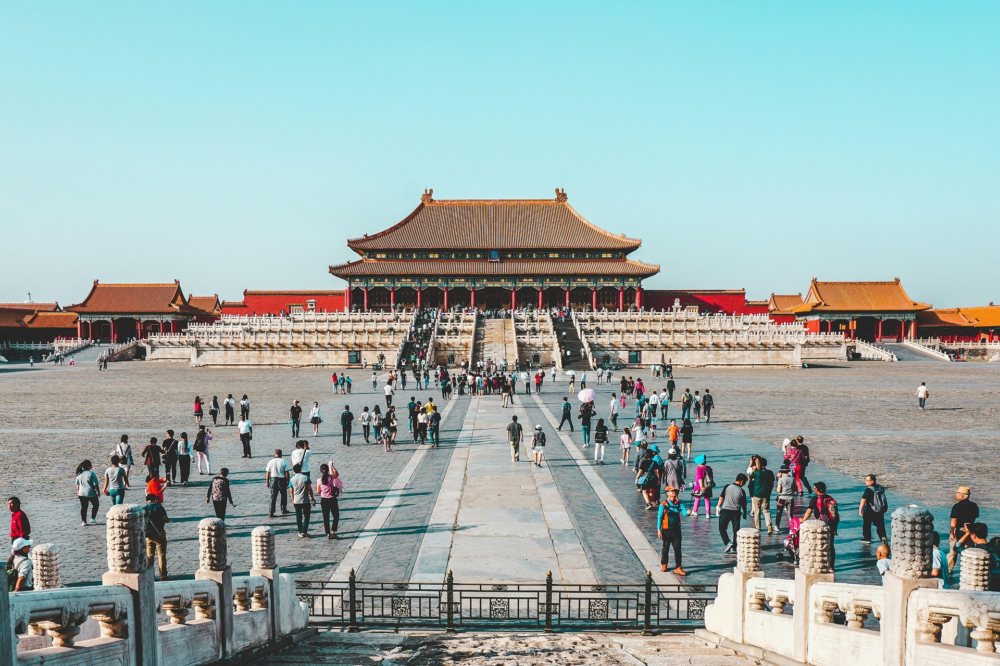
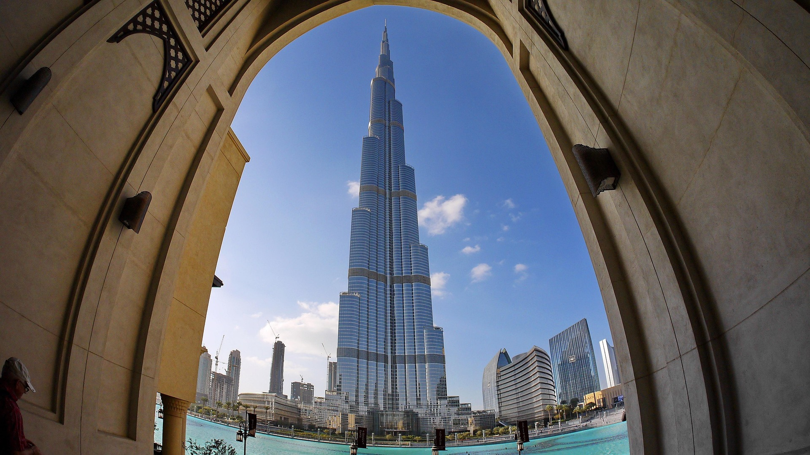

Monte Fuji, Japão
O monte Fuji é a mais alta montanha da ilha de Honshu e de todo o
arquipélago japonês. É um vulcão ativo, porém de baixo risco de
erupção. O monte Fuji localiza-se a oeste de Tóquio próximo da costa
do oceano Pacífico da ilha de Honshu, na fronteira entre as
províncias de Shizuoka e de Yamanashi.

Cidade Proibida, China
A Cidade Proibida, localizada em Pequim, China, foi o palácio
imperial das dinastias Ming e Qing e é hoje um museu. Conhecida por
sua arquitetura e importância histórica, a Cidade Proibida foi o
centro do poder político chinês por mais de 500 anos. O título de
Cidade Proibida surgiu pelo fato de somente o imperador, sua família
e empregados especiais terem permissão para entrar no conjunto de
prédios do palácio. Trata-se de uma cidade dentro de outra cidade.
Durante séculos, apenas a família do imperador, além dos oficiais e
empregados mais graduados tinham permissão de entrar no local.

Burj Khalifa, Emirados Árabes Unidos
Burj Khalifa, anteriormente conhecido como Burj Dubai, é um
arranha-céu localizado em Dubai, nos Emirados Árabes Unidos, sendo a
mais alta estrutura e, consequentemente, o maior arranha-céu já
construído pelo ser humano, com 828 metros de altura e 160 andares.

Taj Mahal, Índia
O Taj Mahal é um famoso mausoléu de mármore branco situado em Agra,
Índia, e é reconhecido como Patrimônio Mundial pela UNESCO.
Construído pelo imperador Mughal Shah Jahan em memória de sua esposa
favorita, Mumtaz Mahal, é considerado um símbolo do amor eterno e
uma das Sete Maravilhas do Mundo Moderno.